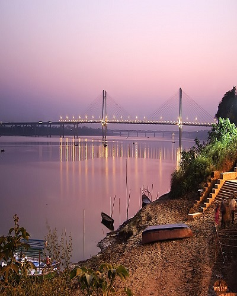
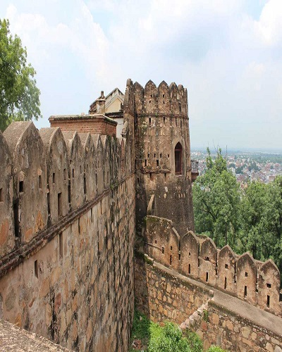
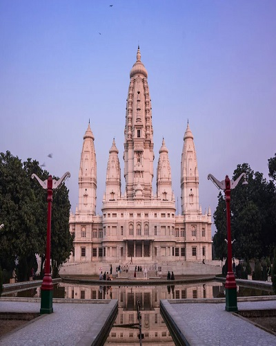
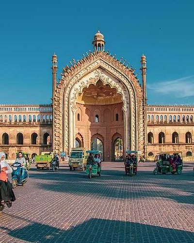
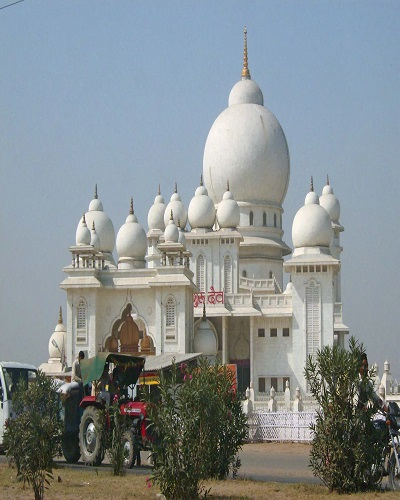
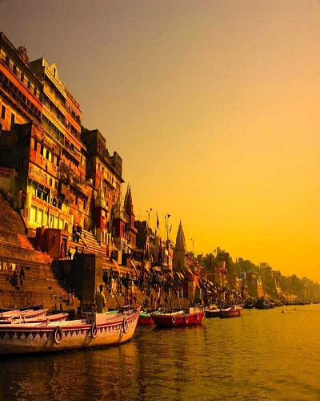
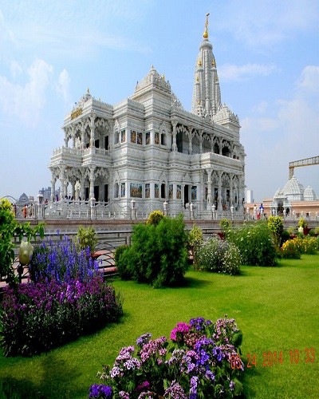

October to March - The best time to visit Agra is between autumn and winter as by this time the heat has ebbed and the weather is pleasant and perfect for sightseeing.Read More
Agra

Allahabad
The best season to visit Allahabad is the winter season in the months of October to March.Read More
The best time to visit Chitrakoot is between July and March when the weather is pleasing and not very hot. Ideal season for a visit is in the monsoon season, especially from August onwards.Read More
Chitrakoot falls
Fatehpur sikri
October to March: The best time to visit Fatehpur Sikri is between autumn and winter as by this time the heat has ebbed and the weather is pleasant and perfect for sightseeing.Read More
Fatehpur sikri
Hastinapur
Winter (November-March)is the best time to visit Hastinapur. The weather then is absolutely pleasant and apt to go sightseeing.Read More
Hastinapur

Jhansi
The winter season(October- March) is the best time to visit Jhansi. During winters, the weather remains cold and pleasant.Read More
Jhansi

Kanpur
The best time to visit Kanpur and to avoid foggy climate is October to March.Read More
Kanpur

Lucknow
Best time to visit Lucknow in monsoon is from August-October.Read More
Lucknow

Mathura
The best time to visit Mathura is October-November as the place offers scenic views of the surroundings.Read More
Mathura
Sarnath
The best time to visit the place is between the months of October to March.Read More
Sarnath

Varanasi
The best time to visit Varanasi is during the winter months (November to February).Read More
Varanasi

Vrindavan
The best season to visit Vrindavan is the winter season.The best months to visit are September, October, November, December, February and March.Read More